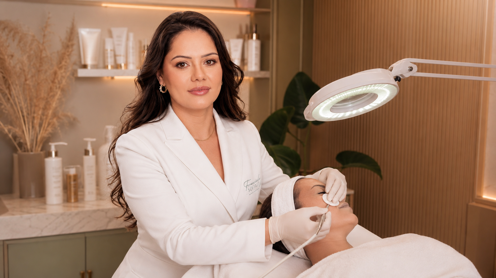

JOURNAL / Skin health
When an overworked skin barrier needs a pause
When an overworked skin barrier needs a pause can sound simple in a search. In practice, a responsible decision depends on history, current skin or scalp condition, routine and the goal behind the question.

01 · Start with the context
 01 · Start with the context
01 · Start with the contextStart with the context
Before choosing a solution, it helps to place when an overworked skin barrier needs a pause in context. Your history, current routine, recent changes and priorities make the questions more useful and keep a trend from deciding the next step alone.
02 · The technique comes after the question
The technique comes after the question
The same concern can require different priorities for different people. A thoughtful consultation explains possibilities, preparation, limitations and recovery before suggesting a technology or a course of sessions.
03 · What is useful to observe
What is useful to observe
Changes over time, products in use, sun exposure, discomfort and photographs taken consistently can turn an impression into a clearer conversation. The aim is not to arrive with a diagnosis, but with useful information.
04 · Safety can include waiting
Safety can include waiting
A more intensive approach is not automatically the better one. When there is uncertainty, irritation, an active condition or a conflicting commitment, waiting, simplifying or seeking another assessment can be the most careful decision.
05 · How a consultation clarifies the next step
How a consultation clarifies the next step
In Londrina, a consultation can help determine whether the concern calls for aesthetic care, preparation, monitoring, time for observation or a different referral. A responsible recommendation may be to treat, adjust or simply wait.
06 · References
References
The sources below support a responsible conversation. They do not replace an in-person assessment, diagnosis or individual guidance.
Contact
Ask about this article or another concern
Send a question with only the details you feel comfortable sharing. We will reply using the contact details you provide.
Next step